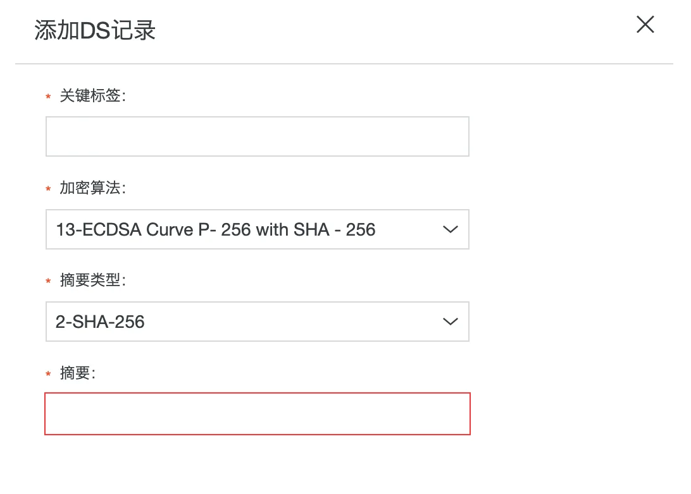
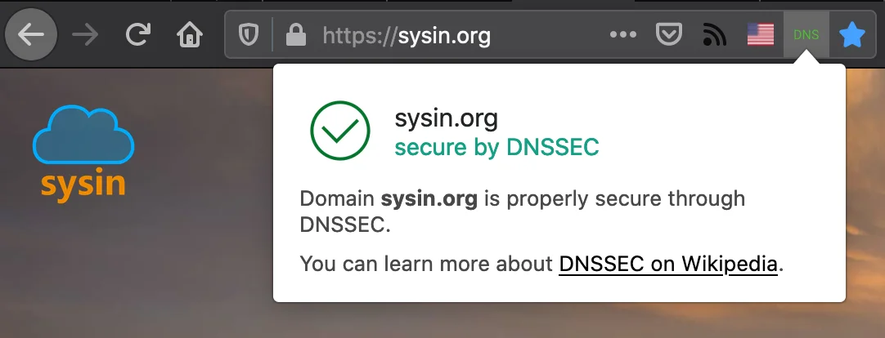

请访问原文链接：DNSSEC 实战 查看最新版。原创作品，转载请保留出处。
作者主页：sysin.org
1. DNS 欺骗和缓存污染
客户端（PC 等）发起域名请求的时候（例如访问：www.baidu.com），如果在本地缓存没有的情况下，会往递归服务器发送域名查询请求（我们也称之为 localdns），递归服务器再一层层递归从 . 到 com. 再到 baidu.com.（即到 . 的权威服务器 --> com. 的权威服务器 --> baidu.com. 的权威服务器)，最终取到 www.baidu.com. 对应的解析 A 记录返回给客户端。在整个查询过程中，攻击者可以假冒任何一个应答方：递归服务器 --> . 的权威服务器 --> com. 的权威服务器 --> baidu.com. 的权威服务器，给请求方发送一个伪造的响应（UDP 包极其容易伪造），其中响应的解析记录给了一个错误的 IP 地址或者其他类型的解析记录（比如 NXDomain、ServFail 或者 cname 到错误的域名地址去等）。客户端或者是解析服务器在没有经过数据来源正确性校验的情况下接受了伪造的应答，直接将导致客户端无法正常访问网站或者其他资源或者客户端请求重定向到了伪造的网站上去 (sysin)。另外由于 DNS 当中存在着缓存，这种错误的记录将随着攻击者设定的 TTL 进行存活缓存，如果是递归服务器受到 DNS 欺骗那将会导致自身以及大面积的客户端缓存了错误的解析记录（可以通过清除缓存解决）。
2. DNSSEC 简介
DNSSEC 全称 Domain Name System Security Extensions，即 DNS 安全扩展，是由 IETF 提供的一系列 DNS 安全认证的机制（可参考 RFC2535）。它提供一种可以验证应答信息真实性和完整性的机制，利用密码技术，使得域名解析服务器可以验证它所收到的应答（包括域名不存在的应答）是否来自于真实的服务器，或者是否在传输过程中被篡改过。
DNSSEC 采用基于公共密钥加密的数字签名，从而增强 DNS 验证强度。DNSSEC 并非对 DNS 查询和响应本身进行加密签名，而是由数据所有者对 DNS 数据自身进行签名。
每一个 DNS 区均包含一个公私秘钥对。DNS 区所有者使用该区域的私钥对区域内的 DNS 数据进行签名，为这些数据生成数字签名。顾名思义，“私钥” 是指 DNS 区所有者会对这些密钥材料保密。但是，该区域的公钥则在区域内公开发布，供全体用户检索。凡在区域内查找数据的递归解析器，还必需检索区域公钥，从而使用公钥验证 DNS 数据的真实性。解析器确认检索到的 DNS 数据的数字签名是否有效。如果有效，证明 DNS 数据合法，则将 DNS 数据返回给用户 (sysin)。如果签名未通过验证，解析器会假设发生攻击，丢弃数据并向用户返回错误。
DNSSEC 在 DNS 协议中新增了两项重要功能：
- 数据来源验证 - 解析器可以通过加密的方式验证收到的数据是否确实来自其认定的数据传送区域。
- 数据完整性保护 - 解析器可以确信，自区域所有者使用区域私钥初次进行数据签名以来，数据在传输过程中并未遭到修改。
3. DNSSEC 原理
DNSSEC 通过公钥密码技术对 DNS 中的信息创建密码签名，为 DNS 信息同时提供认证和信息完整性检查，它的实施步骤如下：
DNS 服务器收到 DNS 查询请求后，用散列函数将要回复 DNS 报文的内容进行散列运算，得到 “内容摘要”，使用私匙加密后再附加到 DNS 报文中；
DNS 查询请求者接收到报文后，利用公匙解密收到的 “内容摘要”，再利用散列函数计算一次 DNS 查询请求报文中的 “内容摘要”，两者对比；
若相同，就可以确认接收到的 DNS 信息是正确的 DNS 响应；若验证失败，则表明这一报文可能是假冒的，或者在传输过程、缓存过程中被篡改了。
4. DNSSEC 资源记录
为了实现资源记录的签名和验证，DNSSEC 增加了四种类型的资源记录：
-
RRSIG (Resource Record Signature) 记录：存储资源记录集合 (RRSets) 的数字签名
-
DNSKEY (DNS Public Key) 记录：存储公开密钥
-
DS (Delegation Signer) 记录：存储 DNSKEY 的散列值，用于验证 DNSKEY 的真实性，从而建立一个信任链
-
NSEC (Next Secure) 记录：用于应答那些不存在的资源记录
5. 主流 DNS 支持情况
公共 DNS
检查方法：dig +noadditional DS icann.org. @DNS 的 IP | grep DS 如果有 DS 记录返回则说明该服务器支持 DNSSEC
Google DNS：8.8.8.8，8.8.4.4
Google DNS IPv6：2001:4860:4860::8888，2001:4860:4860::8844
Cloudflare DNS：1.1.1.1，1.0.0.1
OpenDNS：208.67.222.222，208.67.220.220
阿里 AliDNS：223.5.5.5，223.6.6.6
CNNIC SDNS：1.2.4.8，210.2.4.8
114 DNS：114.114.114.114，114.114.115.115
百度 DNS：180.76.76.76
DNSPOD（腾讯）DNS：119.29.29.29，182.254.116.116
上海电信：202.96.209.5，202.96.209.133
北京联通：202.106.196.115，202.106.46.151，202.106.0.20
以上公共 DNS 都支持 DNSSEC，本地运营商的 DNS 可以使用上述方法查询是否支持。
域名和域名注册商是否支持 DNSSEC
超过 90% 的顶级域名 TLD（top-level domains）支持 DNSSEC，具体列表可以查询：ICANN TLD DNSSEC Report。
对于添加资源记录，ICANN 要求域名注册服务商必须支持，参看：注册服务商运营补充规范。
对于启用 DNSSEC 解析功能，支持的服务商似乎并不多或者需要付费支持，这可能是当前 DNSSEC 部署比较少的原因。
以下是一些知名的域名注册商和服务商对 DNSSEC 的支持情况：
阿里云（原万网）：DNSSEC 解析功能需要付费，使用第三方支持 DNSSEC 的 DNS 解析，可以在阿里云添加 DNSSEC 资源记录（免费）。
腾讯云（DNSPOD）：没有发现 DNSSEC 解析功能，仅仅支持添加资源记录（免费），参看官网。
Godady：升级 尊享版 DNS（付费）可以启用 DNSSEC，支持免费添加 DS 记录。
AWS Route 53：不支持 DNSSEC 解析，仅仅支持添加资源记录，参看官网。
微软 Azure DNS：Does Azure DNS support DNSSEC? No. Azure DNS doesn’t currently support the Domain Name System Security Extensions (DNSSEC).
Google Domain：Google Cloud DNS 中启用 DNSSEC 功能需要付费，参看 ctivating DNSSEC for Cloud DNS domains - Google Cloud。
Cloudflare：免费一键开启 DNSSEC 功能，当然 Cloudflare 不是域名注册商，需要在域名注册商处添加 DS 记录（参看这里）。
6. 配置 DNSSEC 示例
本例中，sysin.org 使用 Cloudflare DNS，域名注册在阿里云。
在 Cloudflare 启用 DNSSEC
登录 Cloudflare，选择你的域名，点击 “DNS” 图标，下拉可以看到 “DNSSEC”，点击 “Enable DNSSEC”，可以看到提示需要到域名注册商添加 DS 记录：

Digest 已经做处理😁。
在阿里云域名管理添加资源记录
登录阿里云控制台，选择 “域名”，则进入 “域名列表”，可以看到域名 “sysin.org”，点击操作最后面的 “管理”，则进入 “基本信息 / sysin.org” 页面，点击左侧的 “DNSSEC 设置”，点击 “添加 DS 记录”

1 | * 关键标签：即 Key Tag，复制上述 Key Tag 内容粘贴进来 |
现在阿里云的 DNSSEC 为付费功能。
现在腾讯云的 DNSPOD 中的 DNSSEC 为付费功能。
验证
使用 测试工具 输入域名进行测试
测试页面中如每一级都显示出了 DS，且无红色报错框，说明已开启 DS，并已生效。
在 Cloudflare 上述页面也会显示：Success! sysin.org is protected with DNSSEC.
7. 查询和验证 DNSSEC
dig 命令
检查一个有 DNSSEC 签名的域名的 RRSIG (Resource Record Signature)。
查看有 DNSSEC 签名的域名 (sysin.org) 需要通过一个支持 DNSSEC 的 DNS 服务器 (8.8.8.8)。
1 | dig sysin.org +dnssec @8.8.8.8 |
在线检测网站
https://dnssec-analyzer.verisignlabs.com/
浏览器扩展
Firefox：https://addons.mozilla.org/zh-CN/firefox/addon/dnssec/

Chrome：https://chrome.google.com/webstore/search/dnssec

文章用于推荐和分享优秀的软件产品及其相关技术，所有软件默认提供官方原版（免费版或试用版），免费分享。对于部分产品笔者加入了自己的理解和分析，方便学习和研究使用。任何内容若侵犯了您的版权，请联系作者删除。如果您喜欢这篇文章或者觉得它对您有所帮助，或者发现有不当之处，欢迎您发表评论，也欢迎您分享这个网站，或者赞赏一下作者，谢谢！
 支付宝赞赏
支付宝赞赏
 微信赞赏
微信赞赏
赞赏一下